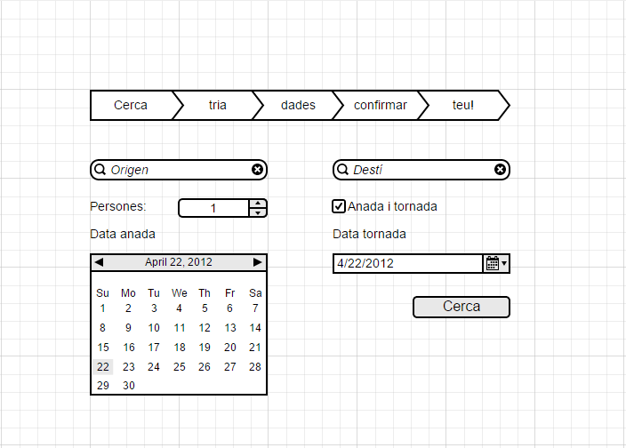
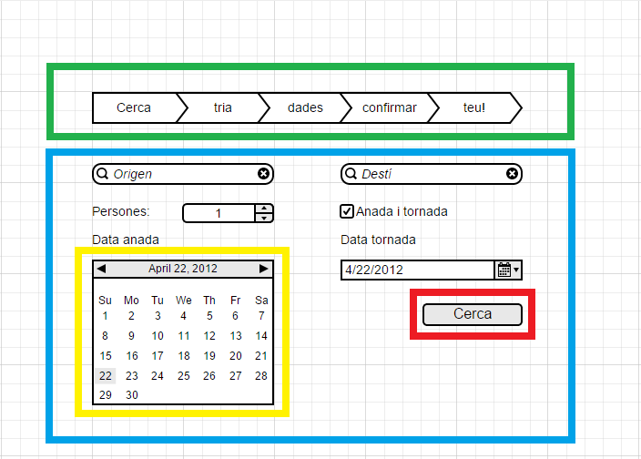
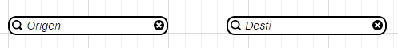
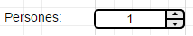
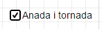
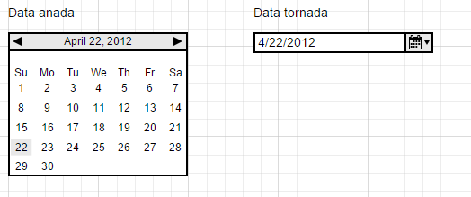

Table of Contents
Manual per la pantalla de Cerca(id:Cerca_Web_2034) del projecte motor de cerca de vols pel cicle de compra de bitllets d'avio pel client. La pantalla moqup a continuació.
La pantalla es dividirà en diferentes parts, algunes de les quals són estructurals i d'altres informació necessària per entendre el funcionament esperat del cicle de venta. En el següent moqup les diferenciem amb colors per facilitar-ne la relació.

Capçalera (verd) és el troncal superior que és comú en totes les pantalles del cicle de venta. Aquest te una pàgina de manual dedicada per ell i el seu comportament.
Cos (blau) és on es desenvoluparan la majoria de les accions de l'usuari i es objecte del present document explicar.
Modificacions contextuals (exemple en groc) en alguns dels components del cos es comentaran accions contextuals, per exemple l'ampliació del calendari al seleccionar-lo.
Acció final (en vermell) és el botó que generarà el fi d'aquesta pantalla per passar a la següent del cicle de venta. En aquest cas només hi ha el botó de "cerca".
El cos de la pantalla és on desenvoluparà gran part de les accions de l'usuari per realitzar el cicle de venta, està composada pels següents elements:
Origen i desti son camps de text on al escriure apareixerà una creueta en negre que si la cliques esborrarà tot el text, així com apareixarà un contextual amentres s'escriu amb possibles entrades relacionades (per exemple bcn serà Barcelona).
Persones serà un camp numéric que tant es podrà escriure com augmentar i disminuir el seu valor amb els botons laterals d'amunt i aball.
El checkbox d'anada i tornada serà un checkbox tradicional, tan mateix si és desmarca mostrarà en gris el calendari de tornada.
El calendari d'anada i tornada, seran dos calendaris que es desplegaran al seleccionar i no deixaran seleccionar dates en el passat.
